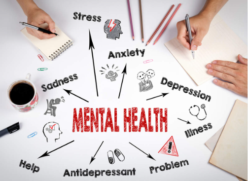

Mental Health Prediction
Mental Health affects your emotional,psychological and social well-being.It affects how we think,feel,and act.It also helps to determine how we handle stress,relate to others,and make choices .In the workplace ,inclusion are keys skills for successful high performing teams or employees.The impact of mental health to an organization can mean an increase of absent days from work and a decrease in productivity and engagement states,approximately 70% of adults with depression are in the workforce.Employees with depression will miss an estimated 35 million workdays a year due menatl illness.
